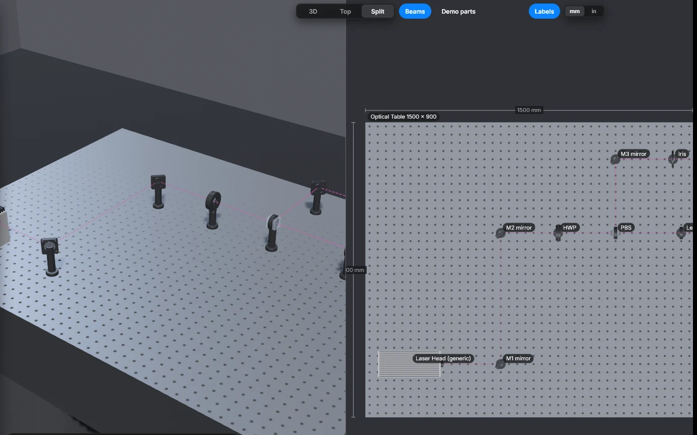
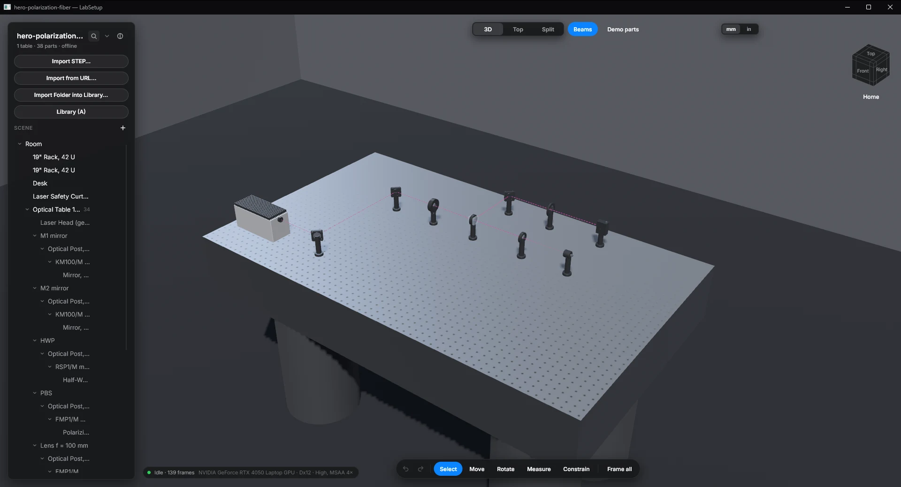
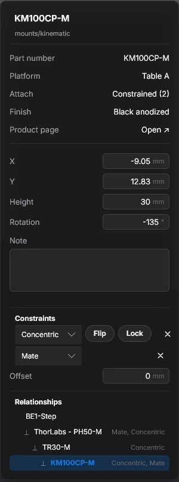
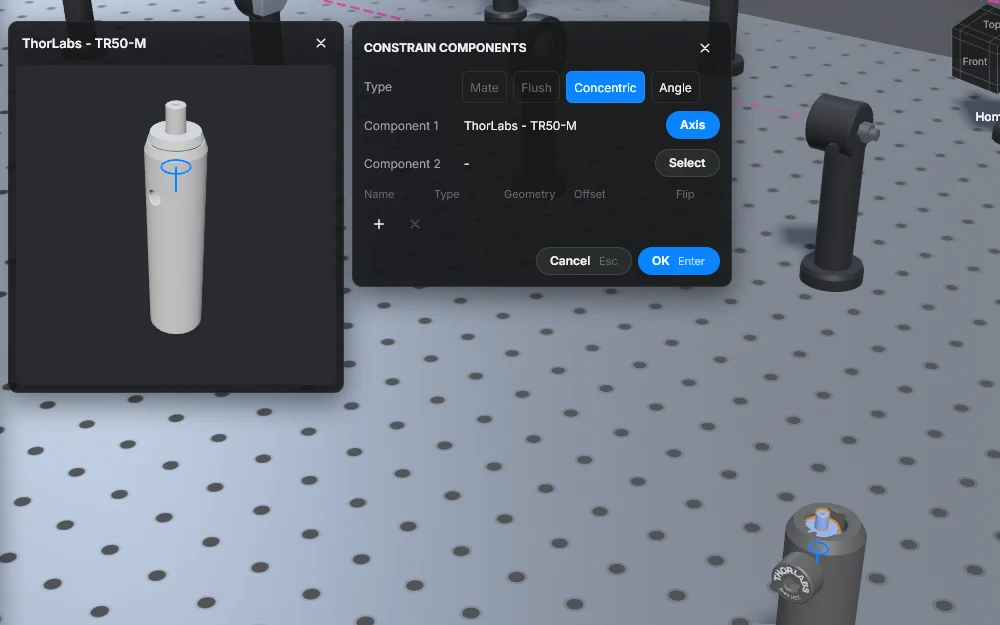
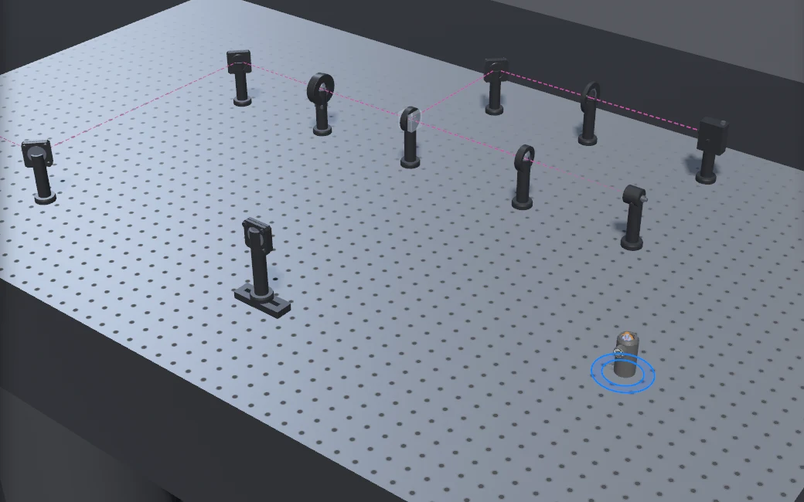
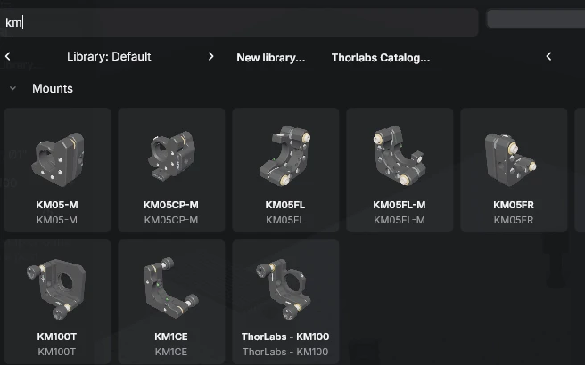
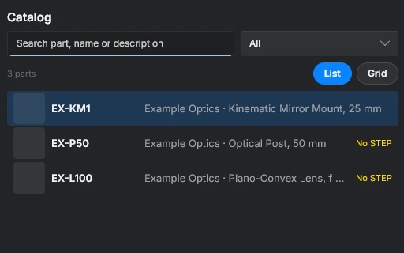
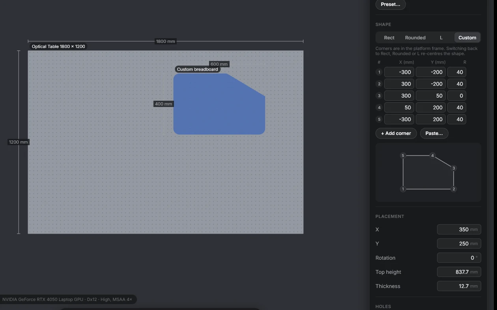
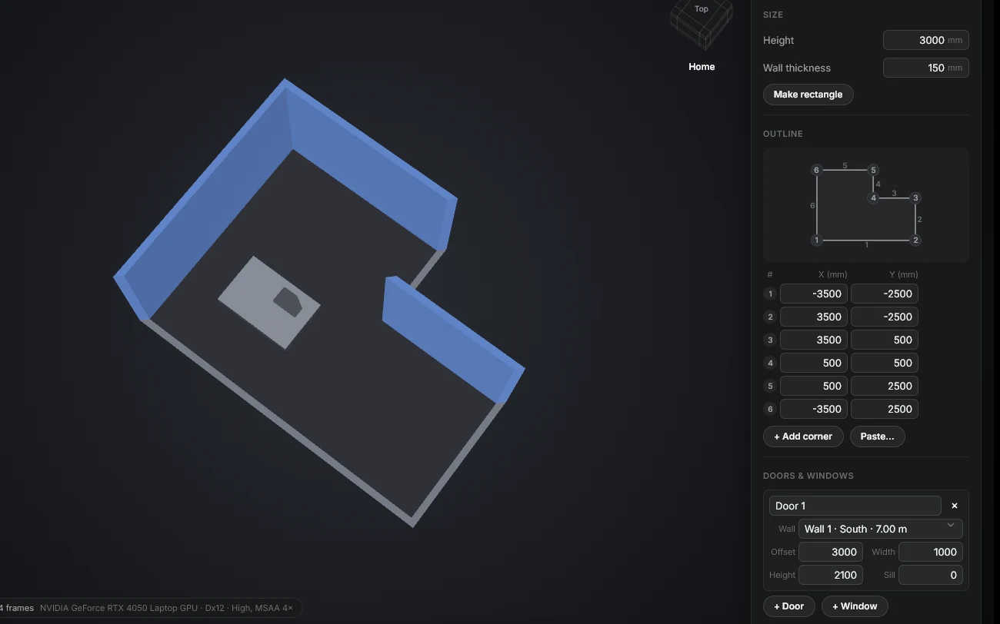

3D, top view, or both
The same table as a 3D scene or a dimensioned top view with the hole grid, labels and the beam path. Split shows them side by side, and both update together as you move parts.

Lay out your quantum-optics experiment on a real hole grid, in 3D and top view, and watch the beam trace through every optic.
Early preview: expect rough edges and changes between versions

The sample hero-polarization-fiber.labsetup: laser, two steering mirrors, a half-wave plate and a polarizing beamsplitter at 75 mm beam height. Open it and the beam is traced through every optic.
Released 20 November 2026. This page skipped v0.0.3 and v0.0.4, so their changes are listed here too.
labsetup-cli: a headless command-line tool for project files, in the same zip.
Everything below is in the download. The close-ups come from earlier builds; the parts of the window they show work the same way in v0.0.5.
The same table as a 3D scene or a dimensioned top view with the hole grid, labels and the beam path. Split shows them side by side, and both update together as you move parts.

Mate, flush, concentric and angle constraints between parts. Pick a face or an axis on each part; posts seat in holders, holders on bases, mounts on posts, and the chain stays together when you move it.

Import a STEP file, a Thorlabs item URL or a whole folder of STEP files into the library. Imported parts snap to table holes and mate like built-in ones.



%APPDATA%\LabSetup\catalogs\, then browse and import (format).

The scenes in these screenshots. Open one with Open… in the project menu, or run labsetup.exe <file>.
.msi) with a Start-menu shortcut; later versions update from inside the app